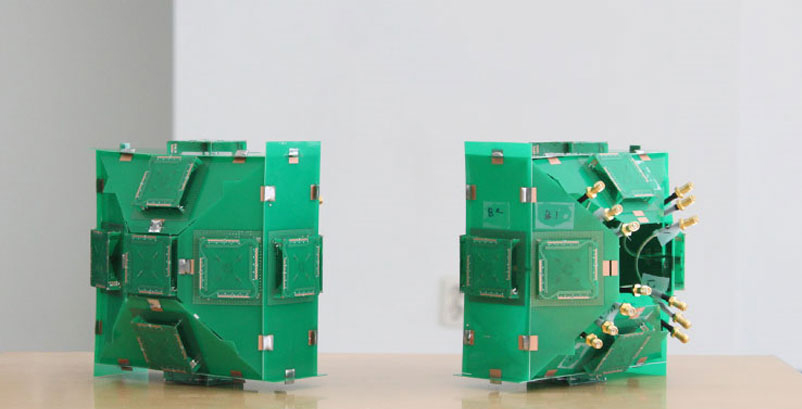
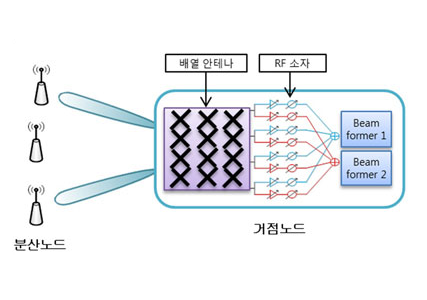
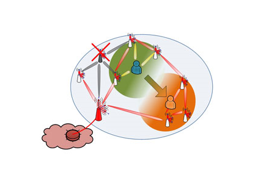

Top 10
Top 10
KAIST RESEARCH ACHIEVEMENTS
The Core Technology
for 5G Mobile
Communication Technology
Professor (KAIST Institute for IT Convergence)
Dong-Ho CHO
Summary
Beyond LTE and 4G: Opening Up an Era of Ultra-Speed Mobile Communication Networks LTE, which has recently been a key word in the field of mobile communications, is being labeled as 4G mobile communications due to its superior speed over CDMA-based technology. Although LTE has not propagated as a common consumer technology yet, researchers in Korea are in the process of researching the core technology of 5G mobile communications. 5G is said to have up to 100 times faster than 4G mobile communications. The problem is that the current mobile communications infrastructure does not sufficiently support the speed that 5G should provide. In particular, a method for data transfer between devices and the base station has to be developed for 5G mobile communications.
R&D Report
Mobile communication systems first supported voice calls (1G and 2G), and then video calls (3G). They now allow users to freely send and receive internet data (4G). The switch over to 4G is progressing due to the wide diffusion of smart phones. This is because smart phones explosively increased data traffic that could not be handled by 3G, through easier access to the internet and the availability of diverse types of services. However, current 4G technology is expected to hit its limit soon due to the continual development of new services such as personal clouds and the high demand for data processing such as high capacity videos. Accordingly, many countries around the world are preparing for the future after 4G by researching 5G mobile communication systems.
The Leading Roles Verifying the Possibility of 5G
The KAIST Institute for IT Convergence is actively researching 5G mobile communications. In order to meet data transfer rates that are 100 times greater than 4G, researchers are investigating a two-stage structure that consists of a macro base station, distributed small base station, and terminal rather than the conventional one-stage system that consists of a macro base station and terminal. Stable processing of large data is possible by increasing the system capacity based on small cells. In addition, mobile data transfer rates can be greatly increased by utilizing beam division multiple access, which sends the signal directionally rather than omni-directionally. Moreover, a pattern polarization method, which uses electric and magnetic field polarization of a directional antenna, is used to increase the spectral efficiency. Furthermore, multiple distributed small base stations mutually cooperatively interact to support the user's QoS.
 Fig 1. A prototype has integrated 13 circular polarized antennae in a compact area, which enables the miniaturization of base stations.
Polarized Antenna
In order to enhance the performance of mobile communications, multiple antennae must be simultaneously utilized so that each antenna can transfer a different signal. Generally, signal transfer performance is lowered when antennae are in close proximity to each other due to interference between signals. Therefore, there are limitations in the miniaturization of base station antennae because of the large space required to handle MIMO technology. Polarized antennae solve this problem. Multiple electric and magnetic polarized antennae are installed within 貫/2 distance. Thus the integration of multiple electric and magnetic field antennae in a compact space has become possible.
Adaptive Multiple Beam-Forming
In a conventional cellular system, all users' signals interfere with other users' signals within close proximity. In order to solve the problem of signal interference, the signal must be sent accurately toward the user. Adaptive multiple beam-forming provides services to the target user without interfering with other users by producing an elaborate beam-shaped signal that can be directionally transmitted. Researchers at the KAIST Institute for IT Convergence have designed and produced an experimental prototype of an antenna structure that can form multiple beams in a macrocell and distributed small base stations.
Organic Topology
Generally, a base station serves users that are within a radius of 1 km. This base station is called a "macrocell". In order to enhance mobile communication performance, the installation of multiple distributed small base stations, each of which covers a radius of 100 m, is required within a macrocell. However, signals between distributed small base stations interfere with one another. Hence, without cooperation between distributed small base stations, high-quality service cannot be provided. Organic topology is a method that enables the dynamic grouping of distributed base stations so that they may cooperate for improvement of the system capacity and reduction of energy consumption.
 Fig 2. A 5G-appropriate base station and adaptive multiple beam forming system. It is capable of sending multiple signals that are concentrated toward specific directions.
 Fig 3. Distributed small base stations, located within macrocells in an organic topology, form a cluster for service provision. Distributed small base stations in close proximity form small groups and cooperate with each other.
Implications and Future Prospects
Qualcomm, a company that possesses the major patents of conventional mobile communication systems, has set large technological license fees. On the other hand, despite the worldwide competition power of smart phones, domestic worldwide mobile communication companies have paid Qualcomm a considerable amount of royalties. Therefore, it is very important to possess IPR competitiveness in the international mobile communication market through patents and standardizations. In this project, researchers have proposed and verified potential core technologies of 5G mobile communications and are in the process of applying for patents and standardizations. The acquisition of such intellectual property will make it possible to acquire the benefits of technological license fees and to strengthen the competitiveness of domestic mobile communication companies.
Patent
ㆍ20 patent procurement and 5 contributions and acceptances for the IEEE 802.16m international standardization
Related Works
ㆍ20 patent procurement and 5 contributions and acceptances for the IEEE 802.16m international standardization